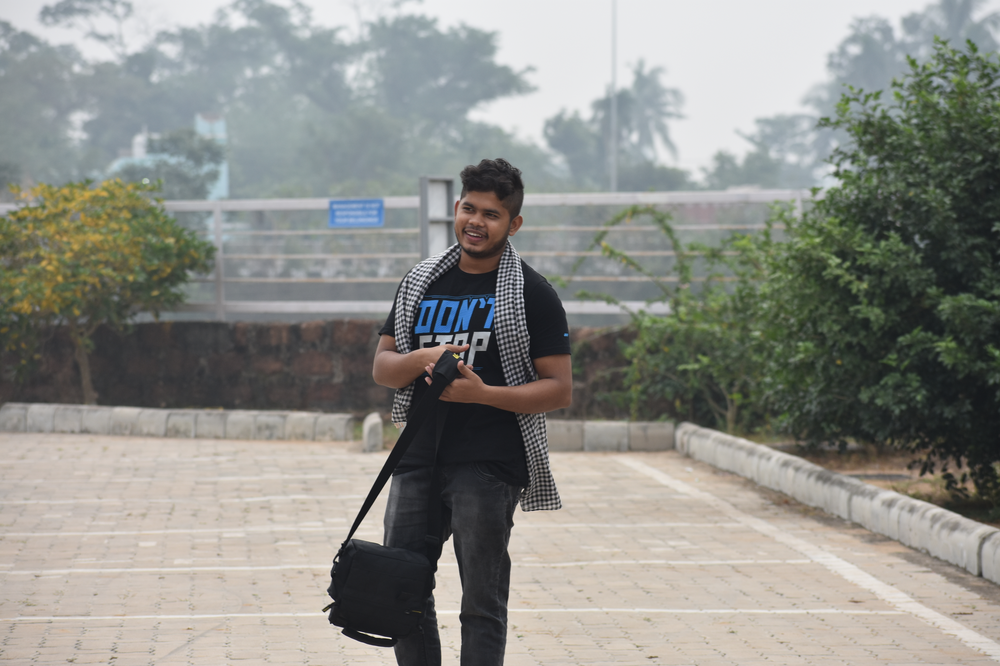

I started vlogging on November 3, 2020.
Digital Donor is a dedicated travel and food blogging channel focused on authentic lifestyle experience. My primary aim is to explore hidden culinary gems, famous street foods, and scenic travel destinations across Odisha and beyond.